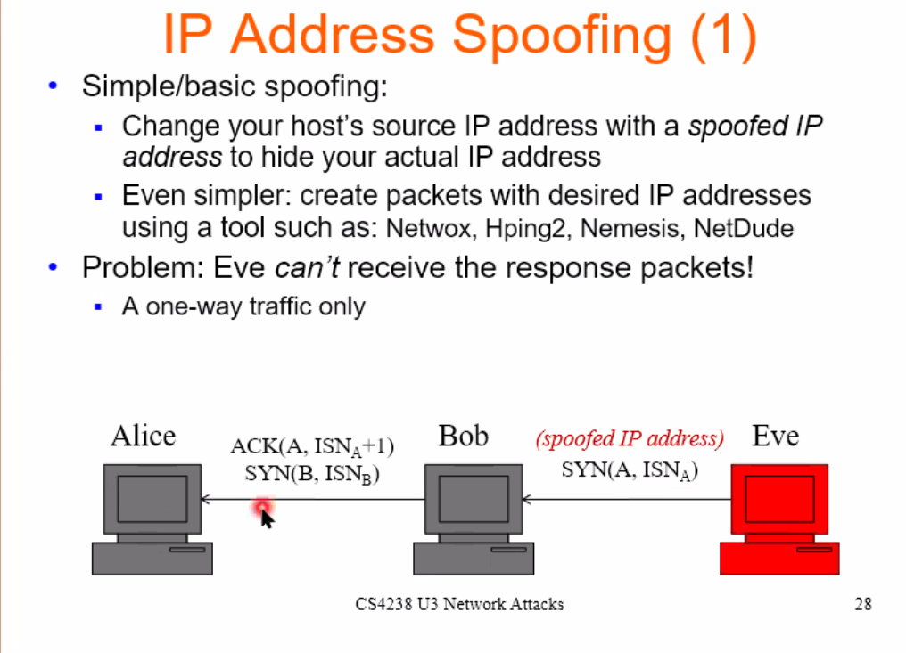

Chapter 1
Basic auth
In Basic auth, the username and password are concatenated together (with a colon ;), then base64-encoded.
It is then included in the HTTP request under the Authorization header.
Authorization: Basic <username+password>
For a username hello and password world, the header looks like this:
Authorization: Basic aGVsbG87d29ybGQ=
OAuth 2.0 / OIDC
OAuth 2.0 is primarily an authorisation protocol.
It might be easier to first think in terms of accessing a resource:
- resources — eg. photos.
- resource owner — the owner of the photos
- resource server — the server that hosts the photos
An application that makes use of such photos would need to access those resources on behalf of the users' photos. This application is the client.
Finally, the server that authenticates the user is called an authorization server.
OAuth 2.0 uses tokens to represent several states:
- access token — a credential used by an application to access an API
- refresh token
- ID token — a credential used to authenticate a user (OIDC)
OIDC
Similar to OAuth 2.0.
Authorization Code Flow
sequenceDiagram client ->> auth server: redirect Note over client,auth server: client ID, redirect URL, scope auth server ->> auth server: login auth server ->> client: redirect Note over client,auth server: auth code client ->> auth server: POST /token Note over client,auth server: client ID, secret, auth code, redirect URL auth server ->> client: - Note over client,auth server: access token, ID token, (refresh token) client ->> resource server: POST /some-api Note over client,resource server: access token, ID token Note right of resource server: validate access token resource server ->> auth server: /validate Note over auth server,resource server: ID token auth server ->> resource server: OK
OIDC
See OAuth 2.0.
TOTP
Time-based/HMAC-based One-Time Password
$$ (\text{time}, \text{key}) \rightarrow \text{otp} $$
The underlying cryptographic primitive used here is the HMAC. (Notice that this function is similar to HMAC anyways.)
Links
https://infosec.mozilla.org/guidelines/web_security
CSRF
Cross-Site Request Forgery
CSRF exploits the fact that a cookie, saved in the browser (read: not the browser tab), is automatically sent together with subsequent requests to the server.
CSRF attacks commonly occur within the context of a web browser, since it automatically handles cookies.
However, it is not restricted to browsers; any client that performs automatic cookie handling could be susceptible to a CSRF attack.
What you know
You know that a server http://example-bank.com requires a cookie in its request for identification and authentication.
You also know that a certain endpoint http://example-bank.com/transfer?account=xxx&amount=xxx transfers money to another account.
Deliver
We'll execute a phishing attack.
Craft an email that has a link http://example-bank.com/transfer?account=raimi&amount=10000 to a particular user who has a lot of money. We'll make it a hyperlink such that the query path is not apparent to the user. Send this email to the user.
Hope
We hope that the user has already been authenticated with http://example-bank.com, and therefore already has cookies saved in the browser.
Attack
Once the user clicks, the link opens up the browser, and navigates to the http://example-bank.com/transfer?account=raimi&amount=10000 page, along with the saved cookies.
Congrats, you now have $10,000 in your account.
Mitigation
DoS / DDoS
Denial of Service / Distributed Denial of Service
In a DoS attack, an attacker floods a system with unnecessary requests in order to overload the system's resources so that it cannot respond to regular traffic.
This flood of messages essentially forces it to shut down, thereby denying service to the legitimate users.
A DDoS attack is similar to DoS but is carried out from multiple devices.
Directory traversal
aka Path Traversal
This is a form of an HTTP exploit in which an attacker attempts to access all the different resources.
The aim is generally to access sensitive resources like password files, system files, or any other data that could be used to exploit the system further.
Examples:
http://example.com/app/.env
http://example.com/app/application.yml
ARP cache poisoning
ARP cache poisoning works in the following way:
- Victim requests for the MAC address of the machine with IP address
a.b.c.d. - Attacker sends a spoofed reply that maps IP address
a.b.c.dto the attacker’s MAC address. - Victim’s ARP cache is updated (”poisoned”) with this information. Future communications between the victim and IP address
a.b.c.dwill be between the victim and the attacker.
IP address spoofing

Mitigation
https://github.com/shieldfy/API-Security-Checklist https://cheatsheetseries.owasp.org/